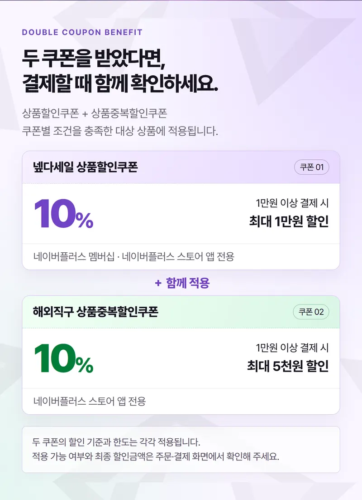

로보락 (Roborock)
제이상점 넾다세일 쿠폰 2장, 발급 시간과 중복 적용 조건
글·구성: 제이상점 · 기종별 소모품 규격·호환·유지비 요약본 (실물 구성 예시 사진과 상세 후기는 아래 네이버 블로그 모바일 원문에서 보실 수 있습니다.)

핵심 관리 · 선택 체크포인트
- 판매자 안내｜로봇청소기 소모품 전문점 제이상점이 공식 행사 안내와 자사 공지 자료를 바탕으로 직접 작성했습니다.
- 2026년 10월 26일~11월 8일 넾다세일 기간에는 넾다세일 상품할인쿠폰과 해외직구 상품중복할인쿠폰을 각각 확인해 주세요.
- 발급 안내 시간은 한국시간 매일 00시·10시·18시이며 선착순입니다.
- 제이상점의 행사 혜택 안내 이미지입니다.
- 넾다세일 상품할인쿠폰에는 네이버플러스 멤버십 조건이 있습니다.
부품 규격 · 점검 기준표
| 쿠폰 종류 | 할인 안내 | 최소 결제 조건 | 사용 대상·경로 |
|---|---|---|---|
| 넾다세일 상품할인쿠폰 | 10% · 최대 1만원 | 1만원 이상 결제 시 | 네이버플러스 멤버십 · 네이버플러스 스토어 앱 |
| 해외직구 상품중복할인쿠폰 | 10% · 최대 5천원 | 1만원 이상 결제 시 | 네이버플러스 스토어 앱 · 대상 상품 조건 확인 |
자주 묻는 질문 (FAQ)
Q. 로보락S10MaxVUltra의 넾다세일 상품할인쿠폰 규격과 관리 기준은 무엇인가요?
A. 10% · 최대 1만원 규격을 사용하며, 1만원 이상 결제 시 기준으로 점검·교체하면 청소 효율을 안정적으로 유지할 수 있습니다.
Q. 로보락S10MaxVUltra의 해외직구 상품중복할인쿠폰 규격과 관리 기준은 무엇인가요?
A. 10% · 최대 5천원 규격을 사용하며, 1만원 이상 결제 시 기준으로 점검·교체하면 청소 효율을 안정적으로 유지할 수 있습니다.
💡 제이상점 1:1 전용 규격 검수 & 실속 구매 포인트
검수 상품: [호환] 로보락 S10 MaxV Ultra 소모품 전용 세제 물걸레 더스트백 1년 세트 · 대표 구성 참고가 70,100원대(옵션·할인별 결제 화면 기준)
선택 가능 옵션: 1년세트 · 1년세트｜호환세제→정품세제 업그레이드 · 6개월세트 · 6개월세트｜호환세제→정품세제 업그레이드 · 3개월세트
☑️ 단품 반복 배송비 대신 기간별 패키지로 1년 유지비 절감 · 물세척 부품 24시간 교대 건조 여분 확보 · 중국 구매대행·해외직배송(개인통관고유부호 확인)